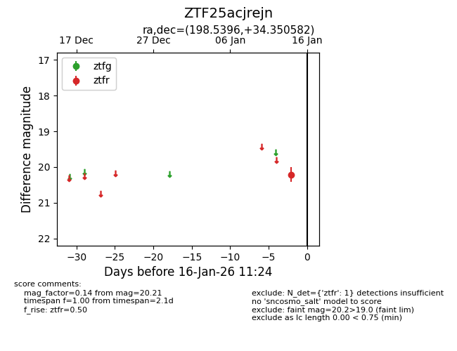
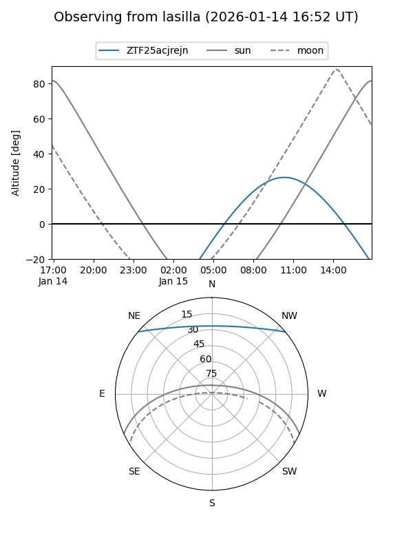
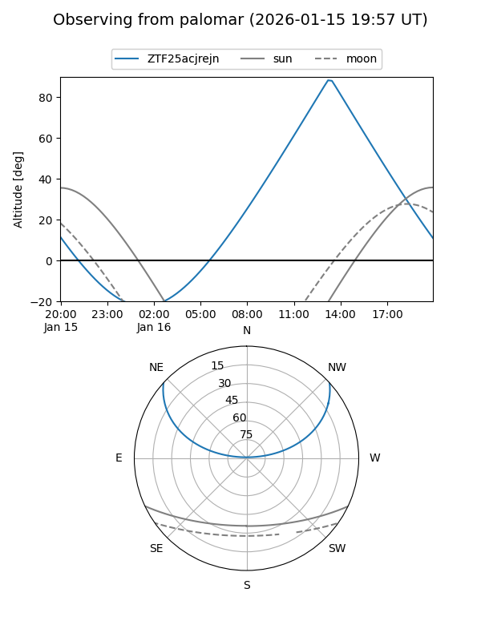

ZTF25acjrejn
Target ZTF25acjrejn at 2026-01-16 11:25
Aliases and brokers:
FINK: link
Lasair: link
ALeRCE: link
alt names
ZTF25acjrejn (ztf,fink_ztf)
Coordinates:
equatorial (ra, dec) = 198.5396,+34.35058
equatorial (HMS+DMS) = 13:14:09.50,+34:21:02.09
galactic (l, b) = (90.2905,+81.28643)
Flags:
Photometry:
last ztfr=20.21
1 ztfr detections
Lightcurve

Visibility


Additional plots